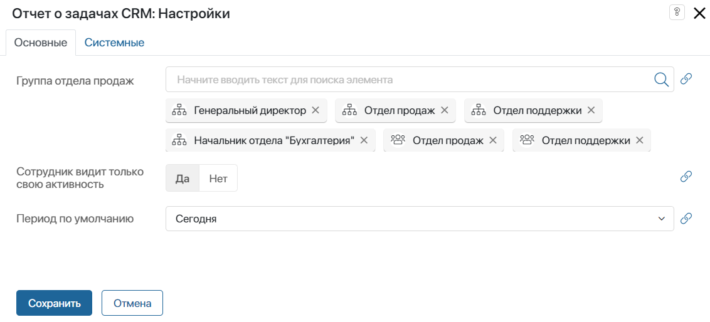
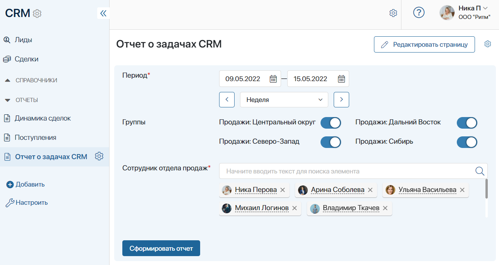
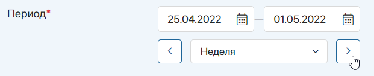
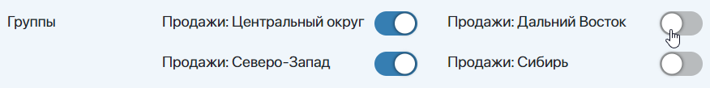
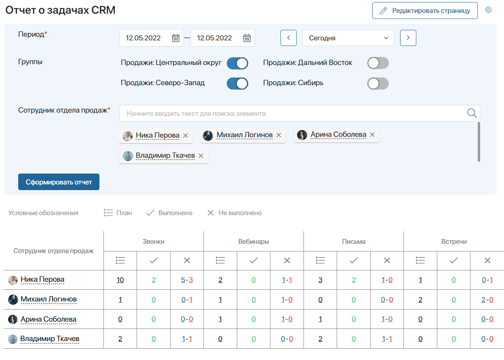
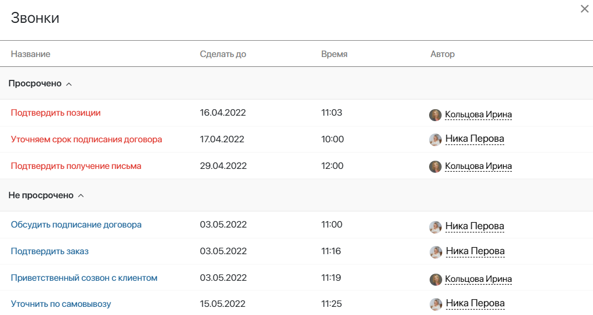

Модуль содержит виджет Отчет о задачах CRM, который позволяет отслеживать планирование и выполнение задач CRM, созданных в приложениях Лиды, Сделки, Компании и т. д. Разместив виджет на странице, вы сможете просматривать таблицу с детализированной информацией по звонкам, встречам, письмам или вебинарам, назначенным на пользователей, за выбранный период времени.
С помощью отчёта руководители отделов продаж смогут оценивать запланированную работу с клиентами по каждому менеджеру, а также контролировать выполнение планов. Менеджеры по продажам, в свою очередь, смогут видеть количество выполненных и просроченных задач своих коллег, что позволит повысить мотивацию сотрудников и эффективность работы компании с продажами в целом.
Подключение и первичная настройка модуля
Чтобы настроить Отчет о задачах CRM, выполните следующие действия:
- Перейдите в раздел Администрирование > Модули. В правом верхнем углу страницы нажмите кнопку +Модуль, а затем Скачать. В каталоге ELMA365 Store установите модуль Отчет о задачах CRM.
- В рамках модуля создан пользовательский виджет, который будет отображать отчёт. Для удобства работы с ним создайте новую страницу внутри раздела или в левом меню и разместите на ней виджет.
- Чтобы добавить виджет на страницу, перейдите в дизайнер интерфейсов страницы, нажав на значок шестерёнки в правом верхнем углу и выбрав Конструктор.
- Перетащите виджет Отчет о задачах CRM с правой панели дизайнера на поле для моделирования и заполните поля в открывшемся окне.
Настройка виджета «Отчет о задачах CRM»
На вкладке Основные определите, как будет выглядеть отчёт для пользователей.

- Группа отдела продаж — укажите пользователей, группы пользователей или элементы организационной структуры, чья статистика по задачам CRM будет отображаться в отчёте;
- Сотрудник видит только свою активность — включите опцию, чтобы статистика в отчёте отображалась для пользователя согласно его положению в организационной структуре компании.
Например, генеральный директор сможет посмотреть задачи всех пользователей, указанных в поле Группа отдела продаж. Начальник отдела продаж будет видеть свои задачи, а также задачи сотрудников, входящих в его отдел. Менеджеру по продажам будет доступна только его статистика;
- Период по умолчанию — выберите период, за который будут отображаться задачи CRM в отчёте при переходе на страницу с виджетом:
- Сегодня — задачи CRM, назначенные на текущую дату;
- День — задачи CRM по текущему и предыдущему дню;
- Неделя — все задачи CRM, поставленные на исполнение в текущую неделю;
- Месяц — задачи CRM за текущий месяц.
На вкладке Системные вы можете настроить видимость и доступ к виджету, а также его поведение при наведении курсора и т. д. Подробнее об этом читайте в статье «Системные настройки виджетов».
- Сохраните настройки. Чтобы виджет стал доступен пользователям, нажмите кнопки Сохранить и Опубликовать на верхней панели дизайнера интерфейсов.
Работа с отчётом на странице
Страница с виджетом Отчет о задачах CRM выглядит следующим образом:

Чтобы посмотреть статистику по задачам CRM, заполните вводные данные:
- Период* — укажите период, за который будет сформирован отчёт. Задачи с датой выполнения, входящей в этот период, будут отображены в статистике. Вы можете задать даты вручную или выбрать опцию из выпадающего списка: Сегодня, День, Неделя, Месяц. При открытии страницы по умолчанию будет применена опция, выбранная в настройках виджета.
При выборе одной из опций вы также сможете сместить даты по календарю вперед и назад на указанный период. Для этого воспользуйтесь кнопками рядом с названием опции. Например, выбрав вариант Неделя, нажмите одну из кнопок, чтобы показать в отчёте статистику за предыдущую или следующую календарную неделю.

- Группы — здесь показываются все группы и отделы из организационной структуры, указанные в настройках виджета. Вы можете отключить группу. Тогда пользователи, входящие в нее, перестанут отображаться в поле Сотрудник отдела продаж, а их задачи не будут учитываться в отчёте. Чтобы отключить группу, воспользуйтесь переключателем рядом с её названием. Например, вы можете посмотреть статистику только сотрудников, входящих в определённую группу продаж, отключив отображение других групп и отделов.

- Сотрудник отдела продаж* — выберите пользователей, задачи которых будут показаны в отчёте. При открытии страницы в поле добавляются все сотрудники из групп и отделов, указанных в настройках виджета.
Если вы включили опцию Сотрудник видит только свою активность, пользователи будут отсортированы согласно организационной структуре компании. Сотрудник, открывший страницу, сможет указать в поле себя, а также своих подчиненных.
- Нажмите кнопку Сформировать отчет.
Чтение отчёта
отчёт представляет собой таблицу, в которой отображены звонки, вебинары, письма и встречи, назначенные в указанный период на выбранных сотрудников.

Все задачи CRM разделены по группам:
- План — все задачи, назначенные на выполнение в выбранный период;
- Выполнено — закрытые пользователем задачи;
- Не выполнено — задачи, ожидающие выполнения. Запланированные, непросроченные задачи показаны синим цветом, просроченные — красным.
Вы можете посмотреть более подробную информацию по каждой задаче CRM, открыв список с перечислением всех просроченных и ожидающих выполнения задач. Для этого нажмите на количество задач в нужной колонке таблицы.
Обратите внимание, доступ к подробному отчёту зависит от должности пользователя, просматривающего страницу. Так менеджер по продажам сможет открыть список только своих задач. Начальнику отдела будет доступен подробный список его задач CRM, а также отчёт по всем его подчиненным.

Нажав на задачу в списке, вы можете открыть карточку лида, сделки или компании, с которой была поставлена задача CRM.